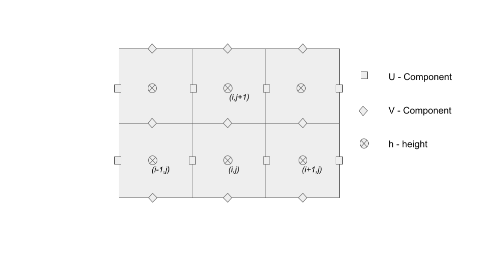

Shallow Water Equations
Written By Nicholas Alexeev
Why is Simulating Water Useful?
Simulating the flow of fluids is very important because fluids such as water play a large role in everyones' lives. For example in order to predict the risk of flooding in an area one has to have the ability to simulate water in order to have an idea of where it would flow. Predicting flooding is very important because it allows housing developers to avoid areas that are at high risk of getting flooded. Another important use is predicting erosion. Water plays a major role in erosion and to accurately predict erosion it is useful to have the ability to simulate the process of water picking up material and moving it downstream. Erosion modeling is also important because it can determine crop yield, If soil is deposited then crop yield may go up but if soil is removed a farms crop yield may decrease.Description of Equations
The Shallow Water equations are used for describing the flow of water when the depth is low relative to the wave length. They are derived by integrating the Navier–Stokes equations across the depth. A conservative form of the shallow water equations is shown below where h is the water height, u is the water velocity in the x direction and v is the water velocity in the y direction. The following equations operate on a non rotating earth.
Limitations
The shallow water's equations are only valid when the wavelength is large relative to the wave depth and there is no flow along the depth axis. This means that the equations can not correctly simulate phenomenon such as cresting waves or currents that vary with depth because there is no formulation for vertical velocity. Not simulating vertical velocity is a useful property because it simplifies the formulation of the equations and makes simulation computationally easier.Simulation
Shown below is a real time simulation of the shallow water equations. The model does not preserve momentum, thus the equations used and shown below are simplified.

The simulation operates on the Matsuno scheme. First the program makes one half time step forwards and then
it uses the information from the half timestep inorder to calculate the change in velocity and heights for a
full time step. The changes in heights and velocities are then applied to the initial time step.